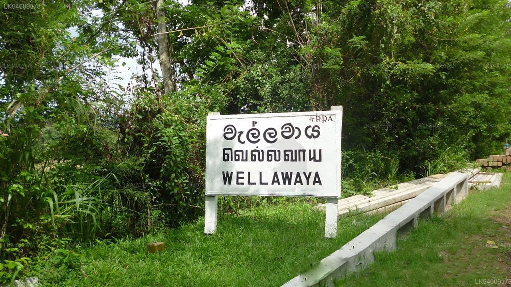

Begin your Sri Lanka adventure heading south through wildlife country. Stop at sacred Tissa Lake, the dramatic Rawana Falls, and end the evening in the cool highland village of Ella.
 Nature
Nature
Tissa Lake
A serene ancient reservoir teeming with birds and elephants bathing at dawn — a perfect first stop.
View Gallery
Scenic DriveWellawaya
A charming junction town at the foot of the mountains — a scenic crossroads between the south and highlands.
View Gallery Waterfall
Waterfall
Rawana Ella Falls
One of Sri Lanka's widest waterfalls, cascading dramatically down the rocky hillside into the valley below.
View Gallery Hiking
Hiking
Little Adam's Peak
A gentle hike rewarded with sweeping panoramas over Ella valley, tea estates, and distant mountains.
View GalleryAfter breakfast in Ella, journey through lush mountain country. Pass sparkling reservoirs and the famous Kithulgala rapids before arriving at your treetop stay.
 Scenic
Scenic
Maskeliya Reservoir
A vast highland reservoir surrounded by tea fields and cool misty hills — ideal for a roadside photo stop.
View Gallery Waterfall
Waterfall
Aberdeen Falls
A hidden gem waterfall in Ginigathhena, cascading into a deep pool surrounded by lush rainforest canopy.
View Gallery Adventure
Adventure
Kithulgala Kelani River
Famous for the Bridge on the River Kwai film site and thrilling white-water rafting on the Kelani River.
View Gallery Treehouse Stay
Treehouse Stay
Ginigathhena Treehouse
Wake up in the jungle canopy — your unique eco-lodge stay surrounded by dense rainforest and birdsong.
View GalleryExplore "Little England" — Nuwara Eliya's colonial charm, rose gardens, emerald tea estates, and misty hilltops await you today.
 Lake
Lake
Gregory Lake
A tranquil colonial-era lake at the heart of the city — ideal for a leisurely morning stroll or boating.
View Gallery Garden
Garden
Victoria Park
A beautifully maintained botanical park bursting with roses, ferns, and seasonal highland blooms.
View Gallery Cultural
Cultural
Tea Factory Visit
See how Ceylon's finest tea is produced — from leaf plucking on misty slopes to the perfect cup.
View Gallery Heritage
Heritage
Nuwara Eliya Post Office
One of Sri Lanka's most photographed colonial buildings — an iconic red-brick Tudor-style landmark.
View Gallery Hiking
Hiking
Lone Tree Hill
Hike to the famous solitary tree silhouetted against vast rolling tea estate vistas — a photographer's dream.
View Gallery Experience
Experience
Strawberry Farm
Pick fresh strawberries straight from the vines at a highland farm — a sweet and memorable experience.
View GalleryHead north toward the Cultural Triangle. Visit the beloved elephant orphanage, ancient cave temples, and the storied city of Polonnaruwa.
 Wildlife
Wildlife
Pinnawala Elephant Orphanage
Watch rescued elephants bathe in the Maha Oya River — one of Sri Lanka's most beloved wildlife sanctuaries.
View Gallery Viewpoint
Viewpoint
Ambuluwawa Tower
A unique spiral tower rising above the biodiversity complex — stunning 360° views over central Sri Lanka.
View Gallery UNESCO Heritage
UNESCO Heritage
Dambulla Cave Temple
A UNESCO World Heritage Site featuring five sacred cave shrines with ancient Buddhist murals and gilded statues.
View Gallery Ancient City
Ancient City
Polonnaruwa Ruins
Walk among the ruins of Sri Lanka's medieval capital — giant Buddha statues, moats, and royal palaces.
View GalleryA full day in the Cultural Triangle — climb the iconic Sigiriya Lion Rock, take a wildlife safari, and explore by bicycle through ancient villages.
 Safari
Safari
Minneriya National Park
Home to the famous "Elephant Gathering" — hundreds of wild elephants congregate around the reservoir in July.
View Gallery UNESCO Heritage
UNESCO Heritage
Sigiriya Rock Fortress
Climb 1,200 steps to the summit of this 5th-century rock citadel — ancient frescoes, mirror walls, and epic views.
View Gallery Hiking
Hiking
Pidurangala Rock
Sigiriya's quieter neighbor — a scenic hike through jungle and boulders leads to a breathtaking panoramic view.
View Gallery/1.jpg) Village Life
Village Life
Village Tour — Bicycle / Bull Cart
Cycle through paddy fields or ride a traditional ox-cart through rural villages — an authentic local experience.
View GalleryA second day to soak in everything Habarana has to offer — a lake safari at sunset, more ruins, or revisit your favourite spots at a leisurely pace.
UNESCO Heritage
Dambulla Cave Temple (Revisit)
Return to explore deeper into the cave complex — early morning light illuminates the murals magnificently.
View Gallery Safari
Safari
Habarana Lake Safari
A peaceful canoe or boat trip at sunset — spot crocodiles, water birds, and elephants along the shore.
View Gallery
UNESCO Heritage
Sigiriya Rock Fortress
If you missed it yesterday, today is your chance — or return for that perfect golden-hour photograph.
View Gallery
Village Life
Village Tour (Extended)
Spend the afternoon on a rural village cycle — visit local homes, try traditional food, and meet the community.
View GalleryWind down your highland adventure and head to the breezy coast. Stop at the colourful Matale spice & batik gardens and end the day by the shores of Negombo.
 Shopping
Shopping
Matale Spice & Batik Gardens
Browse vibrant batik fabrics and organic spice gardens en route at this historic highland market town.
View Gallery Heritage
Heritage
Aluvihare Rock Temple
A historic rock temple in Matale where Buddhist scriptures were first written down on palm leaves in the 1st century BC.
View Gallery Coastal
Coastal
Negombo Lagoon
Watch traditional fishing catamaran boats drift across the calm lagoon as the sun sets over the Indian Ocean.
View Gallery Colonial History
Colonial History
Dutch Fort, Negombo
Explore the remains of this 17th-century Dutch colonial fort, a fascinating slice of maritime history.
View GalleryYour final morning in Sri Lanka. Airport transfer at 6:00 AM. Carry home memories of misty peaks, ancient kingdoms, wild elephants, and warm Sri Lankan smiles.
 Departure
Departure
Airport Transfer — 6:00 AM
Colombo Bandaranaike International Airport (CMB) is just 15 minutes from Negombo — a smooth and easy farewell.
View Gallery